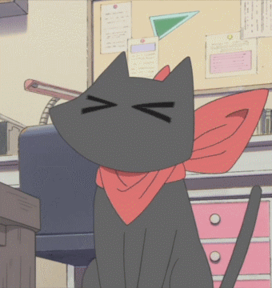

Хто ж я така?
- Головна сторінка
- Тут інформація про мою школу
- Тут інформація про плани на майбутнє
- Тут інформація про моє хоббі
- Тут розклад занять та режим дня
Прийшов час знайомитися!

Моє ім'я, як вказано на головній сторінці, Касяненко Альона Олександрівна. Я студентка першого курсу Харьківського Національного університету будівництва та архітектури.
Навчаюся за спеціальністю 122 "Комп'ютерні науки".
Що це дасть мені у майбутньому? Можливість вивчити нові для себе мови программування, набути нових навичок, важливих для роботи, дізнатися щось нове та саморозвиватися.
Що я вмію на сьогоднішній день? Як мінімум, ввімкнути ком'ютер я взмозі. Окрім цього я вивчаю мову HTML, і, як можна здогадатися, щось знаю про неї.
Я змінила 3 школи. Перша - у рідному місті, звідки я була змушена поїхати через сімейні обставини. Друга - на новому місці, де я навчалася з третього по восьмий клас.
Остання - найкраща з усіх, - ліцей у місті поряд, де я здобула основні навички та змогла зрозуміти, чого хочу від майбутнього і як мені втілити свої бажання у реальність.
Окрім цього, я займалася 7 років грою на фортепіано, вмію трохи грати у настільний теніс.
Улюблена їжа - рамен, смажена картопля (дуже по-студентськи), усе, що пов'язано з вишнею та малиною.
Улюблені кольори - чорний та блакитний.
Трохи про моє дитинство
Я народилася у с.м.т. Красногвардійське, АР Крим. Саме це місто я вважаю своїм рідним, хоч и прожила у ньому не найбільшу частину свого життя. Тут я навчалася в початковій школі лише два класи - я з моєю мамою були вимушені поїхати звідти через деякі проблеми.
Переїхали ми до невеликого містечка Іванівка, Херсонська область, де надалі я жила з мамою та дідусем. Навчалася в Іванівській гімназії, але постійно розуміла, що знання, які надають там замалі, і більшу частину інформації у підлітковому віці знаходила сама за допомогою Інтернету. Мої ровестники, нажаль, не були мені друзями, і я навіть вважаю це непоганим, оскільки мене у цьому містечку нічого не тримало, а навпаки, воно давало мені поштовх для саморозвитку.
Після восьмого класу я змогла поступити до Херсоньского ліцею Херсонської ради (більше інформації за посиланням). Тут я навчалася до кінця 11 классу, успішно склала ЗНО, познайомилася з талановитими людьми. Спробувала навіть написати роботу в Малу Академію Наук, але нажаль, щось пішло не так, і на другий етап я пройти не могла через несподіванку на контрольній роботі. Однак я все одно вважаю це цінним досвідом для майбутніх досягнень.
Сьогодення
На сьогоднішній день я навчаюся у Харьківському Національному університеті будівництва та архітектури (далі - ХІСІ), і, як зазначалося раніше, на спеціальності 122 "Комп'ютерні науки". Живу у гуртожитку, постійно навчаюся чомусь новому та прагну зрозуміти, чого ж я хочу від майбутнього.
Я не хочу спішити у виборі, однак розумію, що уже є дорослою людиною, і потрібно зробити крок уперед. В мене є лише тільки приблизні мрії та плани, але я потроху будую цілісну картинку, постійно думаючи над тим, хто я і чого я варта. Детальніше: "Про мое майбутнє".
Усі питання можна обговорити у листі на моїй пошті.